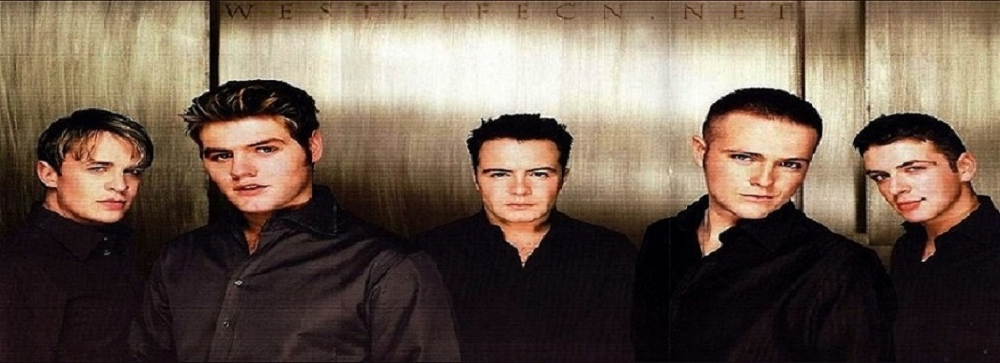
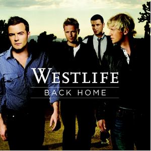

Westlife
A band from Ireland

Featured Work

swear it again
https://en.wikipedia.org/wiki/Swear_It_Again

home
https://en.wikipedia.org/wiki/Back_Home

beautiful world
https://en.wikipedia.org/wiki/Beautiful_World